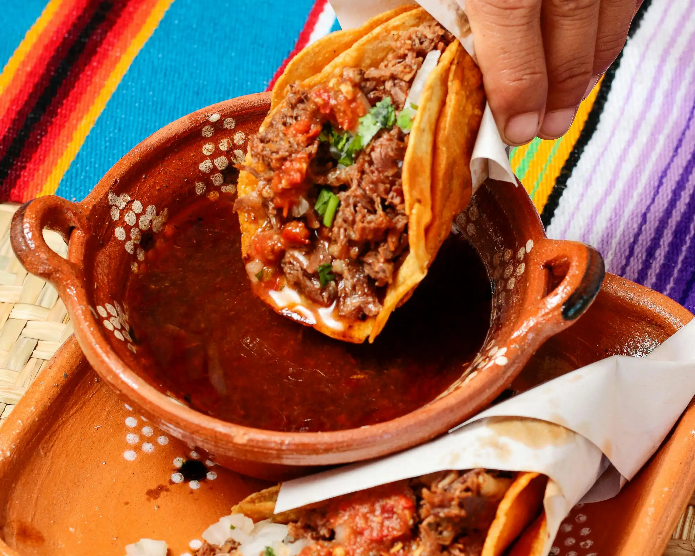
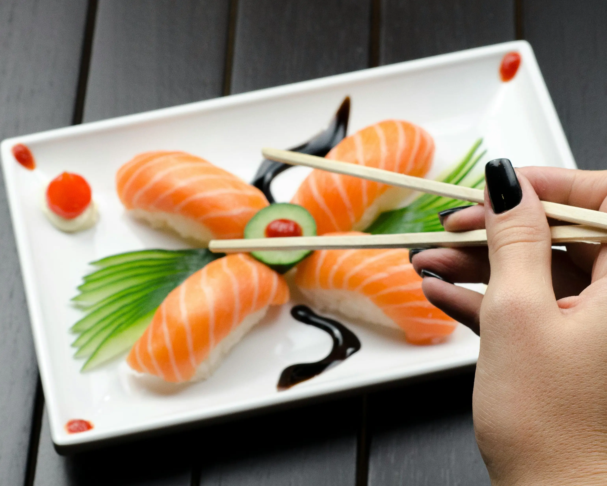

Temporary placeholder for filters & sorting
Cuisine:
You choose!
Time:
We'll see soon
Messages

Chipotle-smoked Butter with Geepeetee tacos
Smoke on the butter!
Cuisine:
Mexican
Time:
20 minutes
Ingredients
- 1 cup corn flour
- Ghee Butter, geez, lots of ghee butter
- Meat, a ton won't be enough
- 10 liters of habanero sauce

Codepenne al Figmatti
With micro soft apples.
Cuisine:
Italian
Time:
45 minutes
Ingredients
- 500g gluten rich fluor
- 2 tbsp. olive oil, plus a little extra for drizzling
- 25g parmesan (or vegetarian alternative), grated
- 75g micro soft apples

Kanba Sushi
Exotic and pleasant in one single (mega)bite
Cuisine:
Asian
Time:
15 minutes
Ingredients
- 1 kg Fish
- 500 g Rice
- Seagrass
- Wasabi